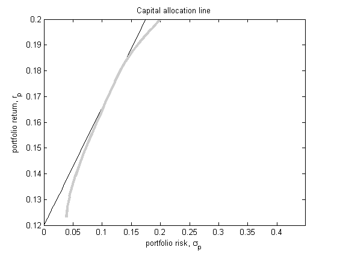
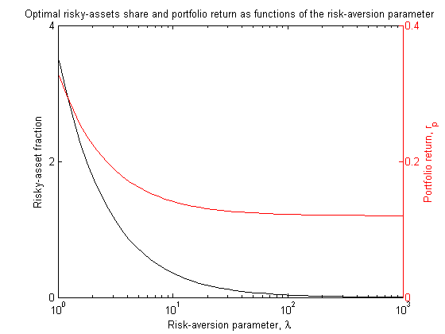
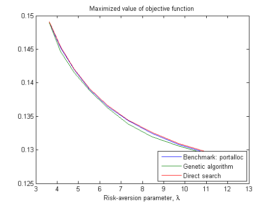
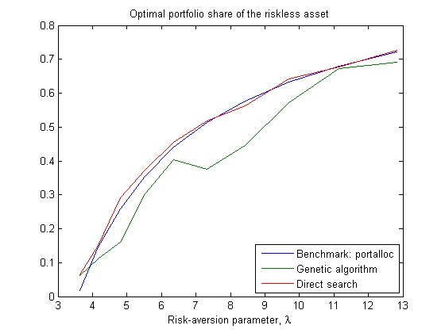
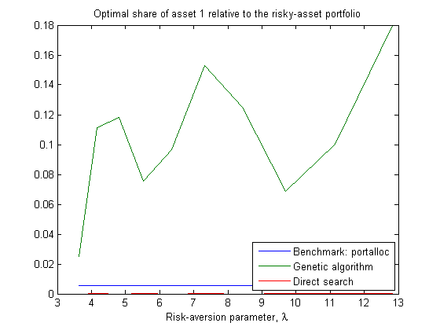
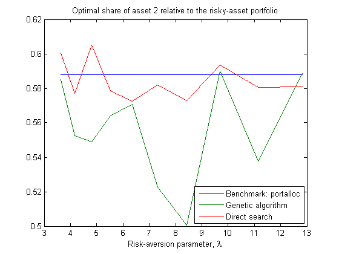

Mean-variance portfolio optimization using GA and PATTERNSEARCH
We seek to try out ga and patternsearch functions of the Genetic Algorithm and Direct Search Toolbox. We consider the unconstrained mean-variance portfolio optimization problem, handled by portopt and portalloc of the Financial Toolbox - note that in absence of constraints other than sum(w) = 1, the problem admits a simple closed-form analytic solution - and see whether ga and patternsearch succeed at locating the optimal portfolio identified by portalloc.
In the event, patternsearch delivers respectable performance, whereas ga does not. (Can this be improved via judicious choice of ga options?) Oddly enough, patternsearch solutions commonly register higher utility levels than their portalloc counterparts.
Hopefully, this code sample will aid other Matlab users experimenting with Matlab's optimization facilities.
Exercise parameters:
expRet = [0.1 0.2 0.15];
expCov = [0.005 -0.010 0.004
-0.010 0.040 -0.002
0.004 -0.002 0.023];
risklessRate = 0.12;
borrowingRate = risklessRate;
portalloc solution
Optimal portfolio as a function of risk-aversion parameter:
[portRisk,portReturn,portWts] = portopt(expRet,expCov,20);
numRAValues = 50; riskAversionMin = .01; riskAversionMax = 3;
riskAversion = logspace(riskAversionMin,riskAversionMax,numRAValues);
[riskyReturn,riskyFraction,overallRisk,overallReturn] = deal(nan(numRAValues,1)); for i = 1:numRAValues [riskyRisk,riskyReturn(i),riskyWts,riskyFraction(i),overallRisk(i),overallReturn(i)] = ... portalloc(portRisk,portReturn,portWts,risklessRate,borrowingRate,riskAversion(i)); end
figure plot(overallRisk,overallReturn,'k'), hold on plot(portRisk,portReturn,'LineWidth',3,'Color',[.8 .8 .8]) xlabel('portfolio risk, \sigma_{p}') ylabel('portfolio return, r_{p}') xlim = [0 max(overallRisk)]; ylim = [risklessRate max(expRet)]; axis([xlim ylim]) title('Capital allocation line') set(gcf,'color','white')

Optimal share of risky assets and portfolio return as functions of the risk-aversion parameter:
figure [a,h1,h2] = plotyy(riskAversion,riskyFraction,riskAversion,overallReturn,'semilogx'); set(a(1),'XColor','k','YColor','k'), set(h1,'Color','k'), ylabel(a(1),'Risky-asset fraction') set(a(2),'XColor','k','YColor','r'), set(h2,'Color','r'), ylabel(a(2),'Portfolio return, r_{p}') xlabel('Risk-aversion parameter, \lambda') title('Optimal risky-assets share and portfolio return as functions of the risk-aversion parameter') set(gcf,'color','white')

Genetic-algorithm and direct-search optimization
optMethods = {'Benchmark: portalloc', ...
'Genetic algorithm', ...
'Direct search'};
numMethods = length(optMethods);
Means and covariances of returns, including the riskless asset:
expRetExt = [risklessRate expRet]; numAssets = length(expRetExt); %#ok
expCovExt = zeros(numAssets); expCovExt(2:end,2:end) = expCov; %#ok
Values of the risk-aversion parameter, resulting in a long-only optimal allocation:
(We make things easier for ga and patternsearch, restricting optima to the unit hypercube)
riskAversion = riskAversion(riskyFraction < 1); numRAValues = 10;
Objective-function definition used by ga and patternsearch:
util = -(expRetExt*(Wts') - A*Wts*expCovExt*(Wts')/2)
objfun = @(Wts) util(Wts);
Objective function is the negative of utility, since ga and patternsearch are minimizers. Refer to the Financial Toolbox documentation page entitled 'Portfolio selection and risk aversion' for a (rather misleading) definition of the utility function.
Constraint definitions used by ga and patternsearch:
Aeq = ones(1,4); beq = 1; % weights sum to 1 lb = zeros(1,4); % weights are positive (see above) ub = ones(1,4); % weights are below one (see above)
Options used by ga and patternsearch:
gaoptions = gaoptimset('Display','off','MutationFcn',@mutationadaptfeasible); psoptions = psoptimset('Display','off');
We suppress the functions' interim command-window output, and modify MutationFcn property of ga, as suggested by the ga warning produced with the option's default setting 'mutationgaussian'.
Arrays storing optimization results:
optFun = nan(numRAValues,1,numMethods); optWts = nan(numRAValues,numAssets,numMethods);
Optimization:
portalloc is invoked once for each risk-aversion case, whereas ga and patternsearch are allowed numAttempts = 10 attempts. Only successful attempts, exiting with an 'appropriate' value of exittext or exitflag (see the functions' documentation), count towards the limit.
numAttempts = 10;
warning off %#ok global expRetExt expCovExt A
An unappealing temporary fix. Documentation-suggested ways to parameterize the objective function resulted in errors and irregularities.
tic for i = 1:numRAValues for j = 1:numMethods if j == 1 A = riskAversion(i); [a,c,riskyWts,riskyFraction,d,e] = portalloc(portRisk,portReturn,portWts,risklessRate,borrowingRate,A); Wts = [(1 - riskyFraction) riskyFraction*riskyWts]; optWts(i,:,j) = Wts; optFun(i,:,j) = expRetExt*Wts' - A*Wts*expCovExt*(Wts')/2; else fmax = -Inf; for k = 1:numAttempts goOn = true; while goOn if j == 2 [x f exittext] = ga(objfun,4,[],[],Aeq,beq,lb,ub,[],gaoptions); goOn = isempty(strfind(exittext,'change in the fitness value less than options.TolFun')); else x0 = rand(1,numAssets); [x f exitflag] = patternsearch(objfun,x0,[],[],Aeq,beq,lb,ub,psoptions); goOn = exitflag < 1; end end if -f > fmax optWts(i,:,j) = x; fmax = -f; end end optFun(i,:,j) = fmax; end end end toc
Elapsed time is 363.962409 seconds.
Selected outputs of alternative optimizers:
metricNames = {'Maximized value of objective function', ...
'Optimal portfolio share of the riskless asset', ...
'Optimal share of asset 1 relative to the risky-asset portfolio', ...
'Optimal share of asset 2 relative to the risky-asset portfolio'};
metricValues = {optFun, ...
optWts(:,1,:), ...
optWts(:,2,:)./(1 - optWts(:,1,:)), ...
optWts(:,3,:)./(1 - optWts(:,1,:))};
for i = 1:length(metricValues) figure plot(riskAversion(1:numRAValues),squeeze(metricValues{i})) legend(optMethods,'Location','SouthEast') xlabel('Risk-aversion parameter, \lambda') title(metricNames{i}) set(gcf,'color','white') end




close all % Example: portoptgads (Oh, FEX code metrics..)